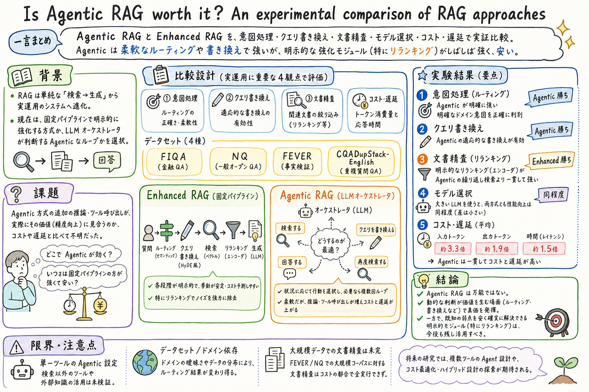

第一に、Naive RAG の弱点を4つに分け、Enhanced と Agentic の対応を同じ土俵で比較している。

どんな論文か
この論文の問いはかなり実務寄りで、「Agentic RAG は本当に採用する価値があるのか？」である。RAG は本番システムの中心部品になり、固定パイプラインに router、rewriter、reranker を足す Enhanced RAG と、LLM が検索や再検索を判断する Agentic RAG のどちらを使うべきかが現場の設計判断になっている。
著者らは、RAG の弱点を4つに分けて比較する。対象外質問にも検索してしまうこと、質問と文書の表現がずれて検索が弱くなること、検索結果にノイズが混ざること、基盤 LLM の強さやコストに左右されることである。それぞれに対して、Enhanced は専用モジュール、Agentic は LLM の判断で対処する。
結果はきれいな二択ではない。Agentic RAG は、明確なドメインでの意図判定と、ケースごとに変えられるクエリ書き換えで強い。一方で、検索後の文書リスト改善では、明示的な reranker を使う Enhanced RAG のほうが良い。Agentic が再検索しても、同じ文書を再び拾いやすく、方向転換が十分に起きなかった。
コストも重要で、Agentic RAG は平均で入力トークン 3.3 倍、出力トークン 1.9 倍、時間 1.5 倍を要する。結論としては、Agentic RAG を全部に被せるのではなく、動的判断が効く場所に使い、reranking など既知の弱点には Enhanced の明示的部品を残すのがよさそうである。
Enhanced RAG と Agentic RAG を、複数データセット、複数評価軸、コストと遅延まで含めて比較する論文である。
Enhanced RAG は、router、query rewriting、retriever、reranker、generator のような固定モジュール列として扱われる。Agentic RAG は、LLM が検索するか、クエリを書き換えるか、再検索するか、回答するかを選ぶループとして扱われる。
Agentic 側は単一 RAG ツールに限定されている。これは外部 API や複数ツールによる追加能力を混ぜず、Enhanced RAG と機能範囲を揃えるためである。
課題と貢献
第二に、FIQA、NQ、FEVER、CQADupStack-English を使い、質問応答と情報検索・抽出の両方で評価している。
実務ではこの視点がかなり大きい。
第四に、結論を「Agentic が勝つ / Enhanced が勝つ」ではなく、どの部品にどちらを使うべきかに落としている。
手法のしくみ
1
意図判定では、Enhanced は semantic-router と embedding による valid / invalid 分類を使う。Agentic は、LLM が検索を使うかどうかを自分で決める。
2
クエリ書き換えでは、Enhanced は HyDE 型の固定書き換えを行う。Agentic は、検索クエリをどう書くかを状況に応じて決める。
3
文書リスト改善では、Enhanced は ELECTRA 系 reranker で上位20件を並べ替える。Agentic は必要ならクエリを書き換えて再検索する。
4
基盤 LLM の比較では、Qwen3-0.6B、4B、8B、32B を使い、モデルの強さが Enhanced と Agentic にどう効くかを見る。
検証結果
意図判定では、Agentic は FIQA と CQADupStack-English で Enhanced を少し上回る。一方、FEVER では F1 が大きく落ち、検索すべきでない場合にも検索を使いがちだった。
クエリ書き換えでは、Agentic が平均で Enhanced より +2.8 NDCG@10 ポイント高い。NQ では +7.8 と差が大きく、多様な質問形式に対する柔軟な書き換えが効いている。
平均 NDCG@10 は Naive 45.5、Enhanced with rewriting 49.5、Agentic 43.9 で、Agentic の再検索は十分な改善につながらなかった。
基盤 LLM を大きくすると、Enhanced と Agentic の両方で似たように性能が上がる。Agentic だけがモデルサイズの恩恵を特別に受けるわけではない。
コスト分析では、Agentic RAG は平均で入力トークン 3.3 倍、出力トークン 1.9 倍、時間 1.5 倍を要する。
限界と読みどころ
比較されている Agentic RAG は単一ツール設定であり、ブラウザ、コード実行、複数検索ツールを含む agentic research system とは違う。
FEVER のようにドメイン境界が広いタスクでは、意図判定の定義が難しく、Agentic の強みが出にくい。
NQ と FEVER の文書リスト改善は知識ベースが大きく、Agentic RAG では7日超かかる見込みとして除外されている。
Enhanced 側の実装は semantic-router、HyDE、ELECTRA reranker に依存する。別の部品を使うと差は変わる可能性がある。
読みながら見る図表や節
- Figure 1 は、固定パイプラインとしての Enhanced RAG と、LLM が行動を選ぶ Agentic RAG の違いを示す最重要図である。
- Table 1 は、Naive RAG の弱点、評価対象、Enhanced / Agentic の実装対応を並べる。論文全体の読み方はこの表でつかめる。
- Table 3 は意図判定の結果を見る表。Agentic は明確なドメインで強いが、FEVER では大きく落ちる。
- Table 4 はクエリ書き換えの結果を見る表。Agentic の柔軟な書き換えが平均で勝つ。
- Table 5 は文書リスト改善の結果を見る表。reranker を持つ Enhanced が Agentic を上回る。
- Figure 2 は基盤 LLM を変えたときの性能推移で、Enhanced と Agentic の伸び方が似ていることを示す。
次に読むなら
- Self-RAG、CRAG、HyDE、Probing-RAG などを読むと、RAG の弱点をどの段階で補うかの地図が作りやすい。
- Beyond Semantic Similarity や Is Grep All You Need? と合わせると、検索器単体ではなく、agent が corpus をどう扱えるかというハーネス側の論点に接続できる。
- 実務 RAG では、まず失敗ログを「対象外検索」「クエリ表現のずれ」「検索結果ノイズ」「生成器問題」に分けると、この論文の知見を設計判断に落としやすい。
読後Q&A
この論文の結論を一言で言うと？
Agentic RAG は万能ではない。動的判断が必要な場面では強いが、既知の弱点を直すなら Enhanced RAG の明示的モジュールが安く強い場合がある。
Agentic RAG が向いているのはどこ？
明確なドメインで検索すべきかを判断する場面と、質問ごとにクエリ書き換えを変えたい場面。FIQA や CQADupStack-English、NQ の結果がそれを示している。
Enhanced RAG が向いているのはどこ？
検索後の文書リスト改善のように、弱点が明確で専用部品が効く場所。論文では reranker 付き Enhanced が Agentic の再検索より良い結果を出している。
Agentic RAG はなぜ高くなる？
LLM が判断や反復を行うため、追加の推論ステップとツール呼び出しが増えるから。平均で入力トークン 3.3 倍、出力トークン 1.9 倍、時間 1.5 倍と報告されている。
強い LLM にすれば Agentic が圧勝する？
この実験ではそうではない。Qwen3 のサイズを上げると両方式で似たように性能が上がり、Agentic だけが特別に伸びる傾向は見えていない。
FEVER で Agentic が落ちた理由は？
FEVER は事実検証タスクでドメイン境界が広く、何が知識ベース対象外かが曖昧になりやすい。Agentic は検索しなくてよい場合にも検索を使いやすかった。
実務ではどう組み合わせるのがよさそう？
Agentic を全段に使うより、意図判定やクエリ書き換えに使い、reranking などは Enhanced の明示的部品を残すのが自然。コストが厳しいなら Agentic ループは必要時だけに絞る。
この論文の注意点は？
Agentic RAG は単一ツール設定で評価されているため、複数ツールやブラウザを使う深い調査エージェントにはそのまま一般化できない。Enhanced 側の部品選択にも結果は依存する。